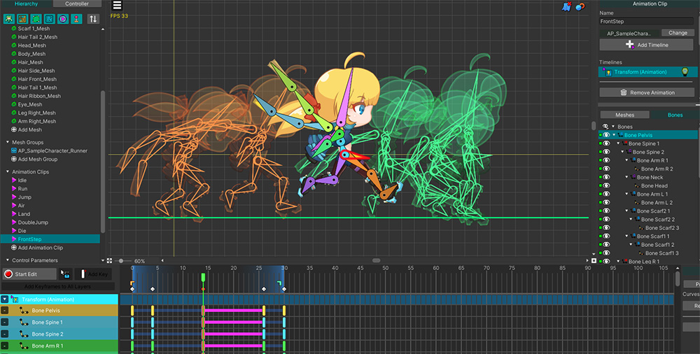
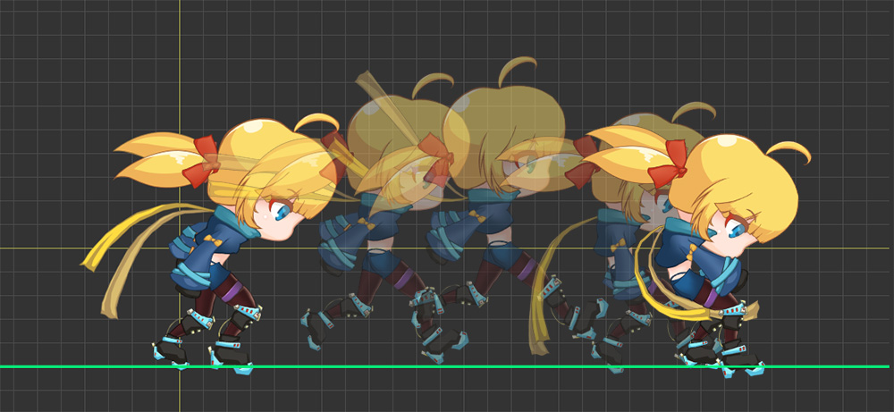
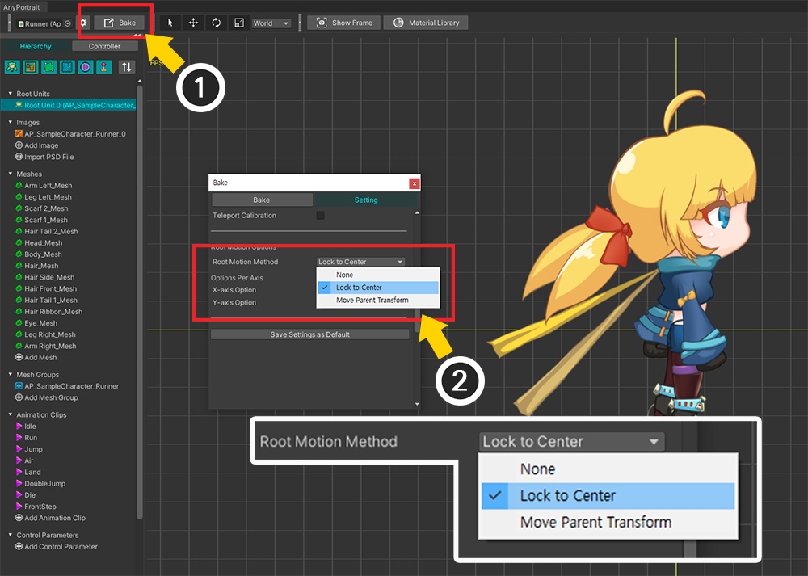
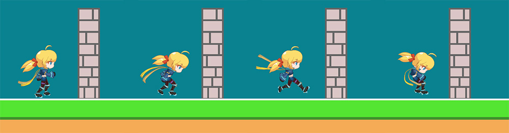
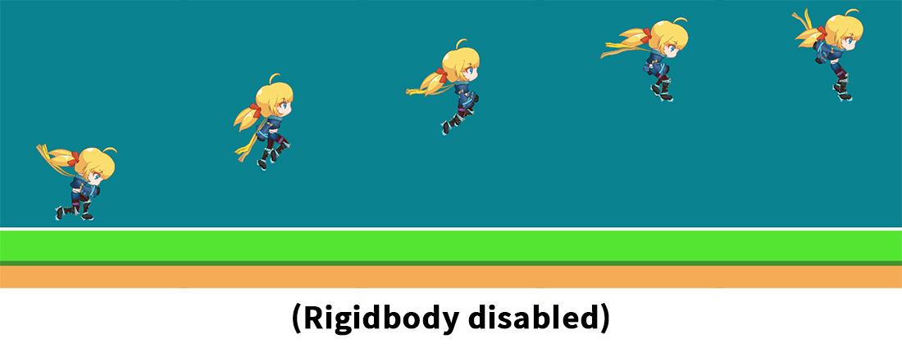
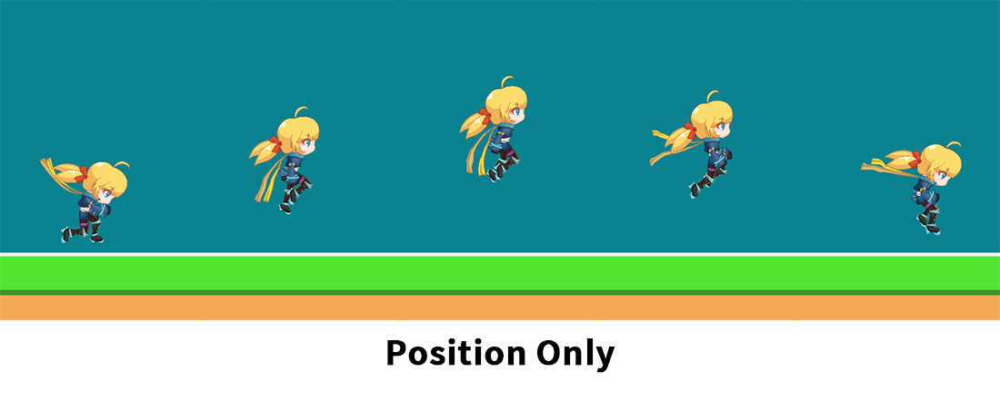
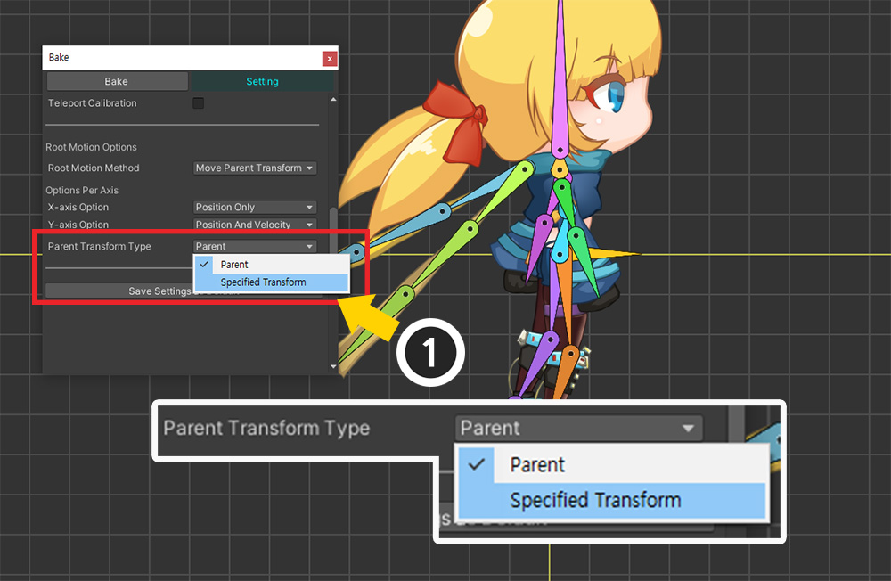

AnyPortrait > Manual > Root Motion
Root Motion
1.4.8
When creating skeletal animation using bones, the character is often moved from the starting position.
Although the character moves in the animation, the GameObject does not actually move, so it can be a bit awkward in the game.
Because the position shown in the animation and the actual position of the character are different, problems such as the character moving through walls occur.
This page covers "Root Motion", a function to solve this problem.
This page introduces problem, solutions, and options.
Note
- Root Motion operates based on the skeleton, so it cannot be applied to characters without a skeleton.
- This page explains how to use "Rigidbody 2D", but you can also use it if you use "Rigidbody", a 3D physics engine, or no physics engine at all.
Situations requiring Root Motion

Let's recreate a situation requiring root motion using a character from the "Runner" demo provided in the AnyPortrait package.
We created a new animation where the character moves from center to right.

As the animation plays, the character leaps to the right.
This is an animation created differently than making animations where characters move not too much from the center.
Now let's play this animation in our Unity scene.

A typical situation where root motion is needed is when “physics functions” are used together.
Let’s create a scene that uses Unity’s 2D physics.
(1) Place the character created earlier in the scene.
(2) Place several sprites as a ground and a wall, including the character, in the scene.
(3) Rigidbody 2D and Collider 2D components were added to characters and sprites.
When running the game, the physics component should prevent the character from going over walls.

Let's run the game and play the animation.
Regardless of the physics component, the character go through the wall and moves to the other side.

Let’s check this status in the scene view.
(1) The object with Rigidbody 2D and Collider 2D added is located on the left side of the wall. That is, the GameObject is stationary.
(2) However, the animation moving to the right makes it appear as if the character has gone over a wall.
Solving Problems Using Root Motion
This problem occurs when there is a significant difference between the actual displayed position of the character and the position of the character's GameObject.
Therefore, to solve this problem, we need to make the “Character’s Position” and “GameObject’s Position” the same.
This position synchronization process is called "Root Motion".
In order to apply root motion, the following conditions must be met.
(1) Specifying a Bone for Root Motion
One bone representing the character's position must be specified for each mesh group that becomes the root unit.
The bone must be a root bone that does not have a parent bone.
(2) Make apPortrait's object belong to its parent GameObject
The "character" unit must start from apPortrait's parent GameObject, not from apPortrait.
This is because the basis for correcting the position is the parent GameObject.

First, let's specify a bone for root motion which means "the visible position of the character".
(1) Select a mesh group. This must be registered as the root unit.
(2) After selecting the Bone tab, select the bone that is the center of the character. In this example, we have chosen the "Pelvis" bone. The bone must be a root bone that does not have a parent bone.
(3) Press the Root Motion button to activate it.
This must be done equally for every mesh group that becomes the root unit.

(1) Press the Bake button.
(2) Press the Setting tab.
(3) In Root Motion Options, change the value of Root Motion Method to Move Parent Transform.
The values of the Root Motion Method option are as follows:
- None : Disable root motion.
- Lock to Center : Forces the character to always be centered on its parent GameObject.
- Move Parent Transform : Anchors the character to the center of the parent GameObject and moves the parent GameObject's Transform based on the animation instead.

When you activate the root motion option, additional options appear as shown above.
After setting as above, execute Bake.
Detailed options are as follows.
- Options Per Axis : Root motion can be set differently for each X and Y axis. You can decide whether the root motion function controls only the "position" or both the "position and velocity of the Rigidbody." You can also apply root motion to only one of the X or Y axes.
- Parent Transform Type : If the Root Motion Method is "Move Parent Transform", the parent GameObject of apPortrait is moved as the target. In this option, it is possible to target another GameObject that meets the conditions.

Let's go to our Unity scene and modify the scene configuration to match the root motion.
(1) Configure the character created with AnyPortrait to belong to the parent GameObject.
(2) Add physics components (Rigidbody 2D, Collider 2D) to the parent GameObject, not the character created with AnyPortrait.
(3) Adjust the position carefully to make it behave like a single character as shown above.

Now let's run the game and play the animation.
When the character moves due to animation, the parent GameObject moves together, and you can see that it naturally collides without being able to cross the wall due to the physics component.
Using "Root Motion" as shown above can solve the problem by synchronizing the character animation and the GameObject's position.
Principle of Root Motion
Root motion is a feature supported by several game engines, including Unity.
In the case of AnyPortrait, we will show you how root motion operates.

AnyPortrait uses a separate “parent GameObject” to operate the root motion.
Controlling the positions of two GameObjects in a parent-child relationship is the core of root motion.

This image shows the process of root motion.
Let's take a look at how "Position of the parent GameObject (blue gizmo above)" and "Position of the character (green gizmo below)" are in sync.
(The green gizmo refers to the bone position for the root motion, not the apPortrait's Transform position.)
(1) This is the default state configured in the scene.
If no animation is playing, the character will be positioned and behave as if it were "one object" with its parent.
(2) This is the state immediately after the animation is played.
When the character moves due to animation, there is a difference in the position of the parent GameObject.
This is the problem introduced earlier on this page.
(3) This is the first step, “Lock to Center”, where the root motion is applied.
This process moves the character in the opposite direction of the animation so that the root bone specified for root motion is centered on the parent GameObject.
After this process, the positions of the character and parent GameObject will become the same again.
(4) The next step of root motion is “Move Parent Transform”.
The idea is to move the Transform of the parent GameObject, not the character, by the displacement the root bone needs to move due to the animation.
Once you've made it to this stage, the root motion will be applied perfectly.
Lock to Center
Among the options in Root Motion Method, let's check how it works if you set it to "Lock to Center" instead of "Move Parent Transform" introduced earlier.

(1) Open the Bake dialog.
(2) Set the value of Root Motion Method to “Lock to Center”.

When you run Bake and run the game, you can see that the character does not move at all from the position as shown above.
Applying different options to each Axis
It is possible to apply root motion differently depending on the X and Y axes.
You can apply root motion only to specific axes and set different operation methods.

We modified the animation as above to see the results of the root motion operating differently for each X and Y axis.
Since the character moves in large amounts on the X and Y axes, it would be good to compare the results.

If you look at "Options Per Axis" among the root motion option items, you can specify options for each X and Y axis.
The option values that can be set are as follows.
- Disabled : No root motion is applied on that axis.
- Position Only : Applies root motion to that axis. For the "Move Parent Transform" method, only the "Position" value is controlled.
- Position And Velocity : Applies root motion to that axis. In the case of the "Move Parent Transform" method, "Speed Compensation" processing is added at the same time as controlling the "Position" value.
Now, let’s apply different options to each axis and check the results.
(To apply root motion, set it to "Position Only" or "Position And Velocity". The difference between the two options is explained below.)

The above result is the result of “Apply root motion only to the X axis”.
You can see the character and parent GameObject moving to the right together, creating a physics collision.
However, you can see that the character's Y-axis position moves independently of the parent GameObject's Y-position.
As a result, the parent GameObject moves only along the X axis due to the animation.

Conversely, this is the result of “Apply root motion only to Y axis”.
You can see the Y positions of the character and parent GameObject moving up and down in sync.
However, the character's X position is independent of its parent GameObject, so it goes through the wall.
You can see that the results change significantly depending on which axis you apply it to.
It may seem best to apply root motion to all axes, but considering the "gravity" nature of the physics engine, applying root motion to only the X-axis may be a good approach.
Set options appropriately depending on the physics you use, game logic, animation creation method, etc.
Position Only, Position And Velocity
Among the options for applying root motion by axis are "Position Only" and "Position And Velocity".
Both of these options apply root motion and work the same way.
However, when using “Physics Engine (2D/3D)”, these two options work a little differently.
As you can see from the name, the difference arises in “Velocity” processing.

The easiest way to compare the differences between these options is through "Gravity".
If the animation moves upward as shown above, the direction of movement of the character in the animation (Up) and the direction of physical movement due to gravity (Down) are opposite to each other.

Let's compare the results by setting the values of Y-axis Option in Options Per Axis to "Position Only" and "Position And Velocity" respectively.
(Used Rigidbody 2D from Unity’s 2D physics engine.)

Before comparing, here is the result of the root motion when no physics engine is applied.
You can see that the animation makes the character move up quite high.
Now let's turn on the physics engine and see how the trajectory changes with each option.

This is the result when set to “Position Only”.
You can see that the character quickly falls during the motion.
The "Position Only" option controls the "Position" of the Rigidbody, but not the "Velocity".
So, despite moving upward due to the root motion, only the "downward speed due to gravity" is calculated, causing the character to fall quickly.

This time, this is the result set to “Position And Velocity”.
You can see that the character's trajectory is slightly higher.
The difference in trajectory occurs because the "Position And Velocity" option controls both "Position" and "Velocity" of Rigidbody.
Because gravity is applied, it doesn't go as high as specified in the animation, but it reproduces the animation's trajectory somewhat better than the "Position Only" method.
However, this option does not control velocity solely based on animation.
This option only performs a slight correction if the position movement caused by the root motion and the velocity of the Rigidbody differ significantly.
So you can see the result of “movement driven by physics engine” and “movement driven by animation” combined.
Specifying another GameObject as the target of Root Motion
If you set the root motion method to Move Parent Transform, the movement by animation is transmitted to the parent GameObject and makes it move instead.
At this time, it is possible to target a GameObject other than the parent GameObject of apPortrait's GameObject.
Note
GameObjects that can be specified must be chained in a parent-child relationship with apPortrait's GameObject.

(1) The scene composition was modified as above.
The character ("Runner") created with AnyPortrait was set to become a child object of the new GameObject "Parent 2". ("Parent 2 > Parent Object > Runner")
If you want to control "Parent 2" as a character unit, you will need to change the target of the root motion to "Parent 2".
(The default root motion targets the "Parent Object", which is the parent GameObject directly above it.)

(1) In the Bake dialog, set the value of Parent Transform Type to Specified Transform.

(1) An option to set the target of the root motion will appear.
(2) Press the Change button.
(3) Transforms of GameObjects that can be specified appear. Select “Parent 2” and press the Select button.
Now the movement of the root motion will be applied to the changed Transform.
Setting Root Motion Options in the Inspector

Root motion can be set in Bake dialog as well as Inspector.
(1) Select a character created with AnyPortrait in the Unity scene.
(2) Select the Basic Settings tab.
(3) Root motion options can also be viewed in Inspector.
- When operating on a 3D physics engine, the X-axis option determines X- and Z-axis movement.
- Movement by root motion operates by detecting changes in the animation's position, so positional movement does not occur in the "first frame" of the animation.
- It is applied differently depending on the component (Rigidbody, Rigidbody2D, Transform) added to the parent GameObject.
- If there are two or more root units, there must be a bone with root motion set in the mesh group of all root units.
- If both X and Y axis options are disabled, root motion will not operate.